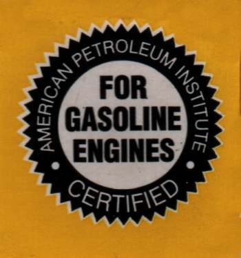

Start with the manual. It gives the grade (thickness) and the quality standard for your engine. This page explains the labels on car oil if you use it in a bike.
Safety
- Used oil is harmful to skin. Wear gloves and take old oil to a collection point.
What to check
- One oil or two. Many bikes share one oil between engine, gearbox and clutch. Gears and clutch break the oil down faster than an engine-only system. Change shared oil sooner, using the interval in the manual.
- Wet clutch. Some newer car oils are made to save fuel and carry the words "Energy Conserving" and a starburst or donut mark. These can contain additives that make a wet clutch slip. They can also be short of some additives an air-cooled bike engine needs, such as phosphorus.
- Heavier grades. Grades such as 10W-40, 20W-50, 15W-40 and 15W-50 were not labelled Energy Conserving at the time of this lesson. Check the bottle.
- If your bike needs a light grade. A light diesel-rated oil with a C designation, such as CG or CH, is one choice. Diesel oils are not required to carry the Energy Conserving label.
- Motorcycle oils. They cost more and are made for wet clutches. They often carry a JASO MA or MB mark. This is the surest choice if you are unsure.
- Synthetic or mineral. Use what the manual allows. Change the oil often whichever you choose.
How often
Oil thins and fills with combustion by-products as it is used. Change it at the manual interval, or sooner in dusty, hot or short-trip use. If the bike is used very little, change it at least once a year, ideally before a long lay-up.
Check your work
- The oil grade matches the manual.
- The bottle does not say Energy Conserving if the bike has a wet clutch.
- The clutch does not slip after the change.